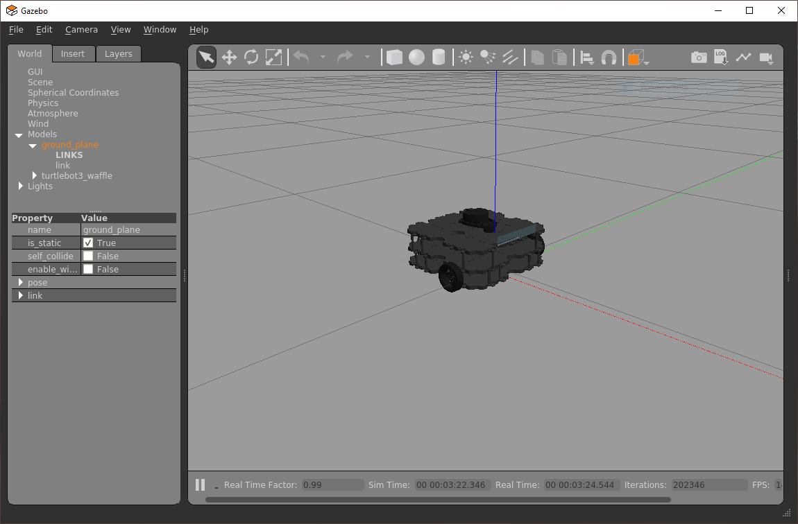

Week 2: Odometry & Basic Navigation
Info
You should be able to complete the exercises on this page within a two-hour lab session.
Introduction¶
Aims¶
This week you will learn how to control a ROS robot's position and velocity from both the command line and through ROS Nodes. You will also learn how to interpret the data that allows us to monitor a robot's position in its physical environment. The things you will learn here form the basis for all robot navigation in ROS, from simple open-loop methods to more advanced closed-loop control (which you will learn more about next week).
Intended Learning Outcomes¶
By the end of this session you will be able to:
- Interpret the Odometry data published by a ROS Robot and identify the parts of these messages that are relevant to a 2-wheeled differential drive robot (such as the TurtleBot3).
- Develop Python nodes to obtain Odometry messages from an active ROS network and translate them to provide useful information about a robot's pose in a convenient, human-readable way.
- Implement open-loop velocity control of a robot using ROS command-line tools.
- Develop Python nodes that use open-loop velocity control methods to make a robot follow a pre-defined motion path.
Quick Links¶
- Exercise 1: Exploring Odometry Data
- Exercise 2: Creating a Python node to process Odometry data
- Exercise 3: Moving a Robot with
rostopicin the Terminal - Exercise 4: Creating a Python node to make the robot move
Getting Started¶
Step 1: Launch WSL-ROS¶
If you haven't done so already, launch your WSL-ROS environment by running the WSL-ROS shortcut in the Windows Start Menu. As you will now know, this may take a couple of minutes, but once it's ready this will open up the Windows Terminal and an Ubuntu terminal instance (which we'll refer to as TERMINAL 1).
Step 2: Restore your work¶
Remember that any work that you do within the WSL-ROS Environment will not be preserved between sessions or across different University computers. At the end of the previous session you should have run the wsl_ros tool to back up your home directory to your University U: Drive. Once WSL-ROS is up and running, you should be prompted to restore this:

Enter Y to restore your work from last time. You can also restore your work at any time using the following command:
Step 3: Launch VS Code¶
It's also worth launching VS Code now, so that it's ready to go for when you need it later on. Follow the steps here to launch it correctly.
Step 4: Download The Course Repo¶
We've put together a few ROS packages of our own that you'll use throughout this course. These all live inside the COM2009 Course Repo on GitHub, and you'll need to download this into the WSL-ROS environment now, before going any further.
-
In TERMINAL 1, navigate to the Catkin Workspace
srcdirectory using thecdcommand:
TERMINAL 1:
-
Then, clone the Course Repo from GitHub:
TERMINAL 1:
-
Once this is done, we need to run
catkin buildto compile everything:
TERMINAL 1:
-
And finally, we need to re-source our
.bashrcfile:
TERMINAL 1:
Remember
If you have any other terminal instances open, then you'll need run
source ~/.bashrcin these too, in order for the changes made bycatkin buildto propagate through to these as well!
That's it for now, we'll start using some of the packages that we've just installed a bit later on...
Step 5: Launch the Robot Simulation¶
In TERMINAL 1 enter the following command to launch a simulation of a TurtleBot3 Waffle in an empty world:
TERMINAL 1:
A Gazebo simulation window should open and within this you should see a TurtleBot3 Waffle in empty space:

You're all set up and ready to go!
Position and Velocity¶
Two types of Velocity Command can be issued to any ROS Robot to make it move (and thus change its position):
- Linear Velocity: The velocity at which the robot moves forwards or backwards in one of its principal axes.
- Angular Velocity: The velocity at which the robot rotates about one of its principal axes.
Principal Axes¶
The motion (i.e. the velocity) of any mobile robot can be defined in terms of three principal axes: X, Y and Z. In the context of our TurtleBot3 Waffle, these axes (and the motion about them) are as follows:

In theory then, a robot can move linearly or angularly about any of these three axes, as shown by the arrows in the figure. That's six Degrees of Freedom (DOFs) in total, achieved based on a robot's design and the actuators it is equipped with.
You should hopefully recall from the "Introducing the Robots" page that our TurtleBot3 Waffles only have two motors though, so they don't actually have six DOFs! These two motors can be controlled independently, which is known as a "differential drive" configuration, and ultimately provides it with a total of two degrees of freedom in total, as illustrated below.

It can therefore only move linearly in the x-axis (Forwards/Backwards) and angularly in the z-axis (Yaw).
It's also worth noting (while we're on the subject of motion) that our TurtleBot3 Waffles have maximum velocity limits, which were also defined on the "Robots" page.
Question
What are the maximum velocity limits of our robots?
ROS Velocity Commands¶
In the previous session you learnt how to list all the topics that are currently active on a ROS system. Open up a new terminal instance now (TERMINAL 2) and use what you learnt previously to list all the topics that are active on the ROS network now, as a result of launching the Gazebo simulation earlier.
Questions
- Which topic in the list do you think could be used to control the velocity of the robot?
- Use the
rostopic infocommand on the topic to find out more about it.
The topic you identified1 should use a message of the geometry_msgs/Twist type. You'll have to send messages of this type to this topic in order to make the robot move. Use the rosmsg command (as you did in Exercise 4 last week) to find out more about the format of this message2.
You should now be looking at a message format that looks like this:
geometry_msgs/Vector3 linear
float64 x
float64 y
float64 z
geometry_msgs/Vector3 angular
float64 x
float64 y
float64 z
There are six parameters that we can assign values to here: linear.x, linear.y, linear.z; and angular.x, angular.y, angular.z. These relate to a robot's six degrees of freedom (about its three principal axes), as we discussed above. These topic messages are therefore formatted to give a ROS Programmer the ability to ask a robot to move in any one of its six DOFs.
geometry_msgs/Vector3 linear
float64 x <-- Forwards (or Backwards)
float64 y <-- Left (or Right)
float64 z <-- Up (or Down)
geometry_msgs/Vector3 angular
float64 x <-- Roll
float64 y <-- Pitch
float64 z <-- Yaw
As we also learnt above though, our TurtleBots can only actually move with linear velocity in the x-axis and angular velocity in the z-axis. As a result then, only velocity commands issued to the linear.x (Forwards/Backwards) or angular.z (Yaw) parts of this message will have any effect.
Robot Odometry¶
Another topic that should have appeared when you ran rostopic list earlier is /odom. This topic contains Odometry data, which is also essential for robot navigation and is a basic feedback signal, allowing a robot to approximate its location.
Exercise 1: Exploring Odometry Data¶
-
In TERMINAL 2 use the
rostopic echocommand to display the odometry data currently being published by our simulated robot:
TERMINAL 2:
Expand the terminal window as necessary so that you can see the whole topic message (it starts with
headerand ends with---).Question
What does the
-coption in the command above actually do? -
Now, you need to launch a new Windows Terminal instance so that you can view it side-by-side with TERMINAL 2. To do this, press the "New Tab" button whilst pressing the
Shiftkey. We'll call this one TERMINAL 3. Arrange both windows side-by-side, so you can see what's happening in both, simultaneously. -
In TERMINAL 3 launch the
turtlebot3_teleop_keyboardnode as you did last week:
TERMINAL 3:
-
In TERMINAL 3 enter
Aa couple of times to make the robot rotate on the spot. Observe how the odometry data changes in TERMINAL 2. Is there anything in thetwistpart of the/odommessage that corresponds to theangular velthat you are setting in TERMINAL 3? - Now press the
Skey to halt the robot, then pressWa couple of times to make the robot drive forwards. How does thetwistpart of the message now correspond to thelinear velsetting in TERMINAL 3? -
Now press
Da couple of times and your robot should start to move in a circle. What linear and angular velocities are you requesting in TERMINAL 3, and how are these represented in thetwistpart of the/odommessage? What about theposepart of the message? How is this data changing as your robot moves in a circular path.Question
What do you think
twistandposeare actually telling us? -
Press
Sin TERMINAL 3 to stop the robot (but leave theturtlebot3_teleop_keyboardnode running). Then, pressCtrl+Cin TERMINAL 2 to shut down therostopic echoprocess. -
Let's look at the
posepart of theOdometrymessage in more detail now. With the robot stationary, userosrunto run a Python node that we have created to help illustrate how this relates to the robot's position and orientation in its environment:
TERMINAL 2:
-
Now (using the
turtlebot3_teleop_keynode in TERMINAL 3), drive your robot around again, keeping an eye on the outputs that are being printed by therobot_pose.pynode in TERMINAL 2 as you do so.The output of the
robot_pose.pynode shows you how the robot's position and orientation (i.e. "pose") are changing in real-time as you move the robot around. The"initial"column tells us the robot's pose when the node was first launched, and the"current"column show us what its pose currently is. The"delta"column then shows the difference between the two.Question
Which pose parameters haven't changed, and is this what you would expect (considering the robot's principal axes, as illustrated above)?
-
Press
Ctrl+Cin TERMINAL 2 and TERMINAL 3, to stop therobot_pose.pyandturtlebot3_teleopnodes. Then, close down TERMINAL 3 so that only one Windows Terminal application remains open with 2 active tabs: TERMINAL 1 and TERMINAL 2.
What is Odometry?¶
We can learn more about Odometry data by using the rostopic info command:
TERMINAL 2:
This provides information about the type of message used by this topic:
Type: nav_msgs/Odometry
We can find out more about this using the rosmsg info command:
TERMINAL 2:
Which tells us that the nav_msgs/Odometry message contains four base elements:
- header
- child_frame_id
- pose
- twist
Pose¶
Pose tells us the position and orientation of the robot relative to an arbitrary reference point (typically where the robot was when it was turned on). The pose is determined from:
- Data from the Inertial Measurement Unit (IMU) on the OpenCR board,
- Data from both the left and right wheel encoders,
- An estimation of the distance travelled by the robot from its pre-defined reference point (using dead-reckoning).
Position data is important for determining the movement of our robot, and from this we can estimate its location in 3-dimensional space.
Orientation is expressed in units of Quaternions, and needs to be converted into Euler angles (in radians) about the principal axes. Fortunately, there are functions within the ROS tf library to do that for us, which we can use in any Python node as follows:
from tf.transformations import euler_from_quaternion
(roll, pitch, yaw) = euler_from_quaternion([orientation.x,
orientation.y, orientation.z, orientation.w],
'sxyz')
Our TurtleBot3 can only move in a 2D plane and so, actually, its pose can be fully represented by 3 parameters: (x,y,θz), where x and y are the 2D coordinates of the robot in the X-Y plane, and θz is the angle of the robot about the z (yaw) axis.
Question
In the previous exercise, did you notice how the linear_z, theta_x and theta_y values in the delta column all remained at 0.000, even when the robot was moving around?
Twist¶
Twist tells us the current linear and angular velocities of the robot, and this data comes directly from the wheel encoders.
Once again, all of this data is defined in terms of the principal axes, as illustrated in the figure above.
Exercise 2: Creating a Python node to process Odometry data¶
In the previous session you learnt how to create a package and build simple nodes in Python to publish and subscribe to messages on a topic. In this exercise you will build a new subscriber node, much like you did in the previous session, but this one will subscribe to the /odom topic that we've been talking about above. You'll also create a new package called week2_navigation for this node to live in!
-
Create a package in the same way as last week, this time called
week2_navigation, which depends on therospy,nav_msgsandgeometry_msgslibraries. Use thecatkin_create_pkgtool as you did last week. Remember to ensure that you are located in the~/catkin_ws/src/directory before you do this though:
TERMINAL 2:
Then:
Fill in the Blank!
Recall how we used the
catkin_create_pkgtool last week, but adapt this now for theweek2_navigationpackage, as detailed above. -
Run
catkin buildon this:
TERMINAL 2:
and then re-source your environment:
-
The subscriber that we will build here will be structured in much the same way as the subscriber that we built last time. The difference now though is that this one will subscribe to the
/odomtopic (instead of"chatter"), and its callback function will therefore receiveOdometrytype messages (instead ofString), so we'll have to deal with those a bit differently. We've created a template for this to help you to get started. Download this into thesrcdirectory of your newweek2_navigationpackage now:
TERMINAL 2:
- Step 1: navigate to the
srcdirectory of yourweek2_navigationpackage: - Then download the template code from GitHub:
- Finally, make this executable using
chmod:
- Step 1: navigate to the
-
Run this as it is to see what happens to begin with:
TERMINAL 2:
... Hmmm, something's wrong here isn't it!? You may have seen the following error:
The clue here is the
python3\r(specifically the\rbit). This is a Windows line ending...Text files (including things like Python scripts) created on Windows use different line endings (i.e. the characters that signify the end of each line of text) to those created on Linux. Windows uses a "carriage return" and a "line feed" (
\r\n) at the end of each line, but Linux uses just a "line feed" (\n)3. Because we're working within a Linux environment here (Ubuntu), we must make sure we're using Linux line endings at all times! We can change this easily from inside VS Code...- In the VS Code File Explorer navigate to the
~/catkin_ws/src/week2_navigation/srcfolder and open theodom_subscriber.pyfile. - In the blue bar along the bottom of the VS Code screen (towards the bottom right-hand corner) you should see the text
CRLF. Click on this and a menu should then appear at the top of the screen with the text"Select End of Line Sequence". - Select the
LFoption in this menu, then save the file.

- In the VS Code File Explorer navigate to the
-
OK, the file should run now, so launch it (using
rosrunagain) and see what it does. -
Have a think about what's different between this and the subscriber from last time...
In the Week 1 Subscriber we were working with a
Stringtype message from thestd_msgspackage, whereas this time we're using anOdometrymessage from thenav_msgspackage instead - notice how the imports and the callback function have changed as a result of this. -
You need to add some additional code to the callback function now:
- The node needs to print the robot's real-time odometry data to the terminal in the form:
(x,y,θz). - The format of the message has already been structured for you, but you need to add in the relevant variables that represent the correct elements of the robot's real-time pose.
- You'll need to use the
euler_from_quaternionfunction from thetf.transformationslibrary to convert the raw orientation values from Quaternions into Radians. If you need a hint, why not have a look back at this bit from earlier, or at the source code for therobot_pose.pynode that we launched from thetuos_ros_examplespackage in the previous exercise.
- The node needs to print the robot's real-time odometry data to the terminal in the form:
-
Launch your node using
rosrunand observe how the output (the formatted odometry data) changes whilst you move the robot around again using theturtlebot3_teleopnode in a new terminal instance (TERMINAL 3). - Stop your
odom_subscriber.pynode in TERMINAL 2 and theturtlebot3_teleopnode in TERMINAL 3 by enteringCtrl+Cin each of the terminals.
Basic Navigation: Open-loop Velocity Control¶
Exercise 3: Moving a Robot with rostopic in the Terminal¶
Warning
Make sure that you've stopped the turtlebot3_teleop node running in TERMINAL 3 (by entering Ctrl+C) before starting this exercise.
We can use the rostopic pub command to publish data to a topic from a terminal by using the command in the following way:
As we discovered earlier, the /cmd_vel topic is expecting linear and angular data, each with an x, y and z component. We can get further help with formatting this message by using the autocomplete functionality within the terminal. Type the following into TERMINAL 3 hitting the Space and Tab keys on your keyboard where indicated:
TERMINAL 3:
The full message should then be presented to us:
rostopic pub /cmd_vel geometry_msgs/Twist "linear:
x: 0.0
y: 0.0
z: 0.0
angular:
x: 0.0
y: 0.0
z: 0.0"
- Scroll back through the message using the ← key on your keyboard and then edit the values of the various parameters, as appropriate. First, define some values that would make the robot rotate on the spot. Make a note of the command that you used.
- Enter
Ctrl+Cin TERMINAL 3 to stop the message from being published. - Next, enter a command in TERMINAL 3 to make the robot move in a circle. Again, make a note of the command that you used.
- Enter
Ctrl+Cin TERMINAL 3 to again stop the message from being published. - Finally, enter a command to stop the TurtleBot3 and make a note of this too.
- Enter
Ctrl+Cin TERMINAL 3 to stop this final message from being published.
Exercise 4: Creating a Python node to make the robot move¶
You will now create another node to control the motion of your TurtleBot3 by publishing messages to the /cmd_vel topic. You created a publisher node in Week 1, and you can use this as a starting point.
-
In TERMINAL 2, ensure that you are still located within the
srcfolder of yourweek2_navigationpackage. You could usepwdto check your current working directory, where the output should look like this:/home/student/catkin_ws/src/week2_navigation/srcIf you aren't located here then navigate to this directory using
cd. -
Create a new file called
move_circle.py:
TERMINAL 2:
... and make this file executable using thechmodcommand.
-
Open up this file in VS Code, then copy and paste the contents of the publisher node from last week into the new
move_circle.pyfile to get you started. Then edit the code to achieve the following:- Make your TurtleBot3 move in a circle with a path radius of approximately 0.5m.
- Your Python node needs to publish
Twistmessages to the/cmd_veltopic in order to make the TurtleBot3 move. See below for further detail on this. - Remember that our robots have a maximum linear velocity (
linear.x) of 0.26 m/s, and a maximum angular velocity (angular.z) of 1.82 rad/s. - Make sure that you code your
shutdownhook()correctly so that the robot stops moving when the node is shutdown (viaCtrl+Cin the terminal that launched it).
Advanced feature:
- Create a launch file to launch this and your
odom_subscriber.pynode simultaneously with a singleroslaunchcommand. Refer to the launch file that you created last week for a reminder on how to do this.
Publishing Twist messages in Python¶
From last week's publisher exercise, we know how to publish a String type message to a topic in Python, but how do we apply the same principles to a Twist message (on the /cmd_vel topic)? Let's have a look at this...
First, you need to import the rospy library, as well as the Twist message type from the geometry_msgs library:
Then, create an instance of a rospy.Publisher() and assign it to an object called pub. When we create the object we tell the Publisher() method which topic we want to publish this message to (via the first input argument), and also that we will be publishing a message of the Twist type (the second input argument):
Then we need to create a Twist() message instance and assign it to an object (which we'll call vel_cmd):
We know from earlier that the geometry_msgs/Twist message has the format:
geometry_msgs/Vector3 linear
float64 x
float64 y
float64 z
geometry_msgs/Vector3 angular
float64 x
float64 y
float64 z
We also know, that only velocity commands issued to the following two parameters will actually have any effect on the velocity of our robot:
geometry_msgs/Vector3 linear
float64 x
...and:
geometry_msgs/Vector3 angular
float64 z
As such, we set appropriate velocity values to these attributes of the Twist() message (assigned to vel_cmd):
We can then publish this to the relevant topic on the ROS network by supplying it to the rospy.Publisher().publish() method (which we instantiated as pub earlier):
Use these pointers when working on your move_circle.py node!
Wrapping Up¶
In this session you have learnt how to control the velocity and position of a robot from both the command-line (using ROS command-line tools) and from ROS Nodes by publishing correctly formatted messages to the /cmd_vel topic.
You have also learnt about Odometry, which is published by our robot to the /odom topic. The odometry data tells us the current linear and angular velocities of our robot in relation to its 3 principal axes. In addition to this though, it also tells us where in physical space our robot is located and oriented, which is determined based on dead-reckoning. We'll talk more about dead-reckoning later on in the COM2009 lecture course, but for now though consider the following (based on what we've covered in this lab session):
- If odometry is derived from dead-reckoning, what information (sensor/actuator data) is used to do this?
- Do you see any potential limitations of this?
- Can a control method that uses odometry as a feedback signal be considered closed-loop control?
We'll explore this a little more next week, but you might want to consider reading Chapter 11.1.3 ("Pose of Robot") in the ROS Robot Programming eBook that we mentioned here.
Saving your work¶
Remember, the work you have done in the WSL-ROS environment during this session will not be preserved for future sessions or across different University machines automatically! To save the work you have done here today you should now run the following script in any idle WSL-ROS Terminal Instance:
This will export your home directory to your University U: Drive, allowing you to restore it at the start of the next session.
Created: 2022-10-11